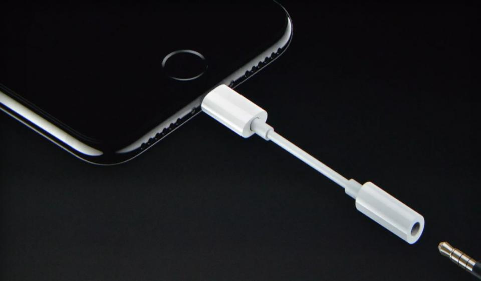
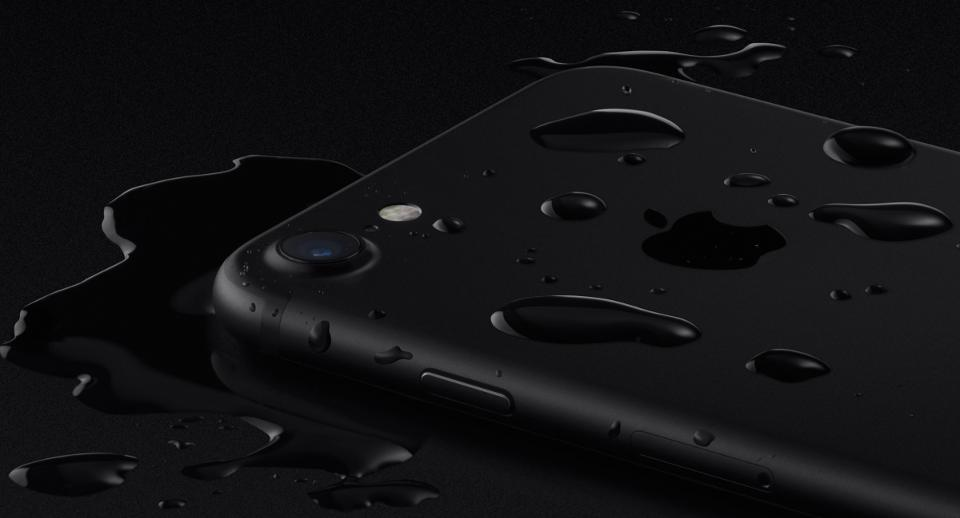

.The iPhone 7 (left) and iPhone 6S (right) are virtually identical on the outside Image credit: Apple .The iPhone 7 (left) and iPhone 6S (right) are virtually identical on the outside Image credit: Apple Design & Size – Good And Bad News There’s no avoiding the most obvious external design change between the iPhone 7 and iPhone 6S: the removal of the headphone jack. Yes, Apple has done the unthinkable (though predictable), citing “courage” to advance standards and advising users switch to wireless headphones if they want to be able to listen to music and charge the iPhone 7 at the same time. Understandably the move will polarize users, especially with no wireless or quick charging to make scenario this less painful. Apple will include a 3.5mm to Lightning adapter in the iPhone 7 box, but for some this risky change will prove to be a deal breaker. iPhone 7 using an Lighting to 3.5mm headphone jack adaptor, which comes bundled in the box. Image credit: Apple iPhone 7 using an Lighting to 3.5mm headphone jack adaptor, which comes bundled in the box. Image credit: Apple Recommended by Forbes iPhone 7 Vs iPhone 7 Plus: What's The Difference? iPhone 6S Vs Galaxy S7: What's The Difference? Apple iOS 10 Vs iOS 9: What's The Difference? Apple Makes iPhone 7 $100 Cheaper? MOST POPULAR Photos: The Richest Person In Every State TRENDING ON FACEBOOK WWE No Mercy 2016 Results: News And Notes Featuring Dolph Ziggler's Intercontinental... MOST POPULAR Photos: The Most Expensive Home Listing in Every State 2016 MOST POPULAR What’s Your Word? The other potential deal breaker is Apple has done almost nothing to change the external design of the iPhone now for three generations and physically the iPhone 7 and iPhone 6S (and iPhone 6) are almost identical: iPhone 7 – 138.3 x 67.1 x 7.1 mm (5.44 x 2.64 x 0.28 in) and 138 g (4.87 oz) iPhone 6S – 138.3 x 67.1 x 7.1 mm (5.44 x 2.64 x 0.28 in) and 143 g (5.04 oz) Where the iPhone 7 has improved, however, is its durability as it retains the same tough Series 7000 aluminium as the iPhone 6S but also adds IP67 dust and water resistance which allows the phone to survive being fully submerged in water for up to 30 minutes. Yes, it’s a catch-up feature to rivals but a good one

nother subtle change is the home button is now a fixed touch sensitive surface with haptic feedback. This should reduce button failures (a fairly common problem) and app developers will get access to allow custom haptic feedback patterns. Meanwhile Apple has also removed the antenna bands from the back of the iPhone 7 which gives it a cleaner look and integrated a speaker into the earpiece so users get loud external audio for the first time. And in a final flourish, Apple has expanded the array of colour options for the iPhone 7 and it comes in Rose Gold, Gold, Silver, Black and (for just 128GB and 256GB options) Jet Black, though the Space Gray option has been ditched.


Displays – Minor Changes
Despite changing the smartphone industry with its Retina Display on the iPhone 4 in 2010, Apple has since been surpassed by rivals producing 1080p, 2K and even 4K OLED displays. But yet again Apple has stuck to its guns: iPhone 7 – 4.7-inch LED-backlit IPS LCD, 1334 x 750 pixels (326 ppi), 65.6% screen-to-body ratio iPhone 6 – 4.7-inch LED-backlit IPS LCD, 1334 x 750 pixels (326 ppi), 65.6% screen-to-body ratio LED and 750p is undoubtedly getting long in the tooth, but Apple has boosted peak brightness on the iPhone 7 by 25%, introduced support for a wider (P3) colour gamut and better color management. All of which sees Apple declare the iPhone 7 to have a “cinema standard” display, but no this won’t match up to the OLEDs on Samsung’s Galaxy S7, S7 Edge and Note 7.